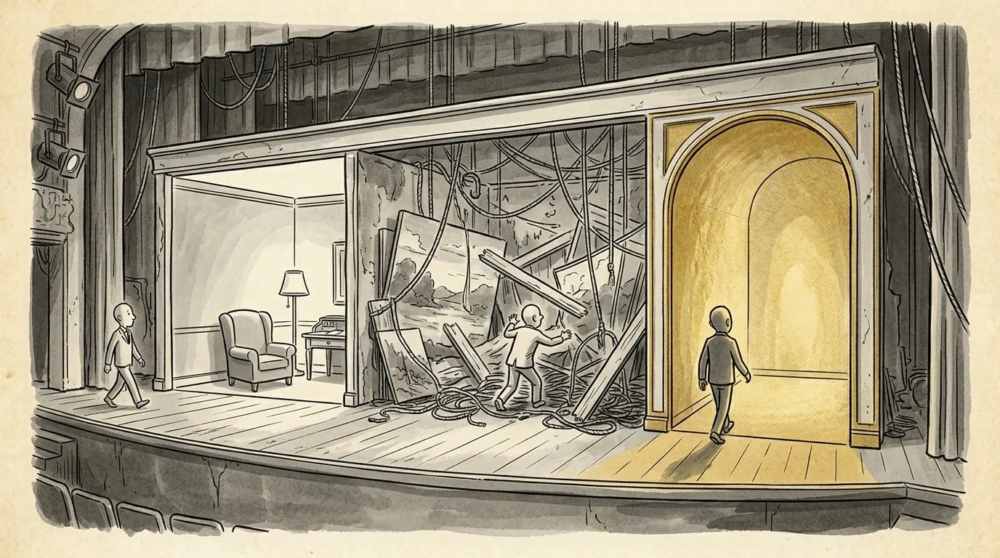

Three-act structure examples: how Pretty Woman, Face/Off and other hits break down
Four well-known films, broken down beat by beat, and what their structure can tell you about the script on your desk.


What three-act structure actually is
Three-act structure divides a story into a setup, a confrontation and a resolution, with major turning points that push the story from one act to the next. The best way to understand it is through three act structure examples from films you already know, so that's most of what this post is.
In a feature screenplay, Act One establishes the world and the protagonist, then ends when something locks them into the central problem. Act Two is the long middle, where the hero pursues a goal against rising opposition. Act Three is the final confrontation and its result.
Syd Field popularized the modern version of this in his book Screenplay, describing plot points that land roughly a quarter and three quarters of the way through a script. (The Syd Field site has a good overview of his paradigm.) Since one script page runs about a minute of screen time, those markers translate directly to the finished film.
The beats of a screenplay three-act structure
Screenplay three-act structure is usually tracked through six beats: setup, inciting incident, Act One break, midpoint, Act Two crisis and climax. Different books use different names, but the jobs are the same.
- Setup (pages 1–10): who the hero is, what they want, what's wrong with their life
- Inciting incident (around pages 10–15): the event that disrupts the status quo
- Act One break (around pages 25–30): the hero commits, or is trapped, and there's no going back
- Midpoint (around page 55): a shift that raises the stakes or changes what the story is about
- Act Two crisis (around pages 80–90): the low point, where the hero seems to have lost
- Climax (the last 15–20 pages): the final confrontation that answers the story's central question
Those page numbers are ranges, not rules. Every film below drifts from them, and that's fine. All minute marks are approximate, from the finished films.
Pretty Woman (1990)
Pretty Woman is a romantic comedy built on a deal, and each act turns on a change to the terms of that deal. I developed this film as an executive, but what follows comes from the finished movie, the same one you can watch tonight.
- Setup: Edward Lewis is a corporate raider who buys companies and breaks them up. He's brilliant at business and empty everywhere else.
- Inciting incident (roughly minute 10–15): Lost in a borrowed sports car on Hollywood Boulevard, Edward asks Vivian Ward for directions and ends up hiring her for the night.
- Act One break (roughly minute 25–30): He offers her a week as his paid companion for business events. She accepts. Now they're bound together.
- Midpoint (a little past the hour mark): At the polo match, Edward's jealousy over Vivian surfaces, and his lawyer Philip Stuckey learns what she does for a living. The arrangement stops being simple.
- Act Two crisis (roughly minute 90–100): Edward offers Vivian an apartment and an allowance. She hears it as the same transaction in nicer clothes. After Stuckey attacks her, she leaves.
- Climax: Edward, who has already chosen to save Morse's shipbuilding company rather than dismantle it, shows up at Vivian's building and climbs the fire escape.
Notice what the structure is doing. Edward's business arc and his romantic arc resolve together. The deal he walks away from and the woman he goes after are the same choice.
Face/Off (1997)
Face/Off shows how a single high-concept premise can be built into a clean three-act machine. I bought the script as an executive. Again, this breakdown is from the released film.
- Setup: An opening flashback shows terrorist Castor Troy trying to kill FBI agent Sean Archer and killing Archer's young son instead. Archer has hunted him ever since.
- Inciting incident (roughly minute 15–20): Archer's team takes Castor down at an airstrip. Castor falls into a coma, but a bomb is still hidden somewhere in Los Angeles.
- Act One break (roughly minute 30–40): To get the location from Castor's brother Pollux, Archer undergoes an experimental surgery, takes Castor's face and goes into prison as him. Then the trap closes: Castor wakes up, forces the surgeon to give him Archer's face and kills everyone who knew about the operation.
- Midpoint (around the middle of the film): Archer breaks out of prison and goes into Castor's world, where he meets Sasha and Castor's son, Adam. He stops trying to get out of the trap and starts fighting from inside it.
- Act Two crisis: After a raid that kills Pollux, Castor murders the FBI director and is made acting director. Archer is a fugitive wearing his enemy's face, and Castor is at home with Archer's family.
- Climax: A church shootout and a boat chase end with Archer killing Castor. He gets his face back and brings Castor's son Adam home.
The engine here is irony: each act puts both men deeper into the other's life. That's what keeps a two-hour-plus action film from feeling like a string of set pieces.
Die Hard (1988)
Die Hard is the textbook case of a contained thriller where every act break tightens the box.
- Setup: NYPD cop John McClane flies to Los Angeles on Christmas Eve to reconcile with his estranged wife, Holly, at her company party in Nakatomi Plaza.
- Inciting incident (roughly minute 20): Hans Gruber's crew seizes the building and takes the party hostage. McClane slips away barefoot.
- Act One break (roughly minute 30–35): McClane kills his first gunman and sends the body down in the elevator. He's no longer hiding. He's at war.
- Midpoint (roughly minute 60–70): After the police assault fails, McClane drops the gang's own C4 down an elevator shaft. He's gone from nuisance to the main obstacle in Gruber's plan.
- Act Two crisis (roughly minute 85–100): His feet cut to pieces by broken glass, McClane bleeds on a bathroom floor and talks to Sgt. Al Powell as if he might not make it. Soon after, a TV broadcast tells Gruber that Holly is McClane's wife.
- Climax: The roof explodes, McClane gets back inside, and he faces Gruber, who is holding Holly at gunpoint. Gruber falls to his death.
The emotional spine is the marriage. McClane starts the film unable to say he's sorry, and his low point is the moment he finally says it, to a stranger on a radio.
Get Out (2017)
Get Out proves three-act structure works for horror, and it won Jordan Peele the Oscar for Best Original Screenplay.
- Setup: Photographer Chris Washington goes upstate to meet his girlfriend Rose's parents for the first time.
- Inciting incident (roughly minute 10–15): On the drive, they hit a deer, and Rose stands up for Chris when a police officer asks for his ID. It plays as loyalty. On a second viewing, it plays very differently.
- Act One break (roughly minute 25–30): Rose's mother hypnotizes Chris and drops him into the "sunken place." Something is wrong in this house, and he can't simply leave.
- Midpoint (roughly minute 50): At the family's party, a camera flash jolts a guest named Logan, who grabs Chris and tells him to get out. Unease becomes evidence.
- Act Two crisis (roughly minute 70–80): Chris finds proof of Rose's past relationships and tries to flee. The family blocks the door, and he wakes up strapped to a chair in the basement.
- Climax: Chris blocks the hypnosis, fights his way out of the house, and his friend Rod arrives to drive him away.
Peele uses each beat to answer one question and raise a worse one. That's the horror version of rising stakes.
Structure doesn't write the scene. It tells you which scene is missing.
Why 3 act structure in film is a diagnostic, not a formula
The best use of 3 act structure in film is to diagnose a draft, not to generate one. Nobody falls in love with a script because the midpoint landed on page 55. They fall in love with the characters and the story. Structure is how you find out why the story isn't working.
When I read a script that sags, the cause is almost always structural, even if the writer thinks it's a dialogue problem. A few patterns show up again and again:
- The first act runs long. If the hero doesn't commit until page 40, readers feel the wait. Often the setup is doing work the inciting incident should do.
- The middle has no midpoint. Without a turn, Act Two becomes the same obstacle repeated. Ask what changes in the middle that forces a new strategy.
- The low point isn't low. If the hero never seems to lose, the climax has nothing to overcome.
- The climax isn't the hero's choice. If rescue comes from outside, the structure is complete but the story isn't.
Look back at the four films above. The labels are sometimes debatable. You could argue Get Out's inciting incident is the hypnosis, or that Face/Off's real midpoint is the moment Castor takes Archer's face. That's the point. The question isn't which minute a beat lands on. It's whether each beat does its job.
If you're building structure before you write, start with a screenplay outline or a treatment, where moving a beat costs minutes instead of weeks.
How to check your own script's structure
The fastest structural check is to write one sentence for each of the six beats and see which ones you can't write. The empty line is your problem.
- Write the beat sentences without looking at the script. If you can't remember your midpoint, neither will a reader.
- Now find each beat in the draft and note its page. Big drift from the ranges above isn't wrong, but it should be a choice.
- Check that every act break is caused by the hero's choice or forces one. Coincidence at a turning point weakens everything after it.
- Read just the first 30 pages and the last 20. The climax should answer the question the first act asked.
A professional read helps here because you know what you meant, and a reader only knows what's on the page. That gap is what script coverage is designed to measure.
Frequently asked questions
What are the three acts of a screenplay?
Act One is the setup, ending when the hero commits to the central problem. Act Two is the confrontation, the long middle where obstacles escalate. Act Three is the resolution, where the final confrontation answers the story's central question.
Where do the act breaks fall in a feature screenplay?
Roughly a quarter of the way in for the end of Act One, around pages 25 to 30, and about three quarters of the way in for the end of Act Two, around pages 80 to 90. Treat those as ranges, not rules.
Do all movies follow three-act structure?
Most mainstream films can be described in three acts, though some writers prefer four-act, sequence or other models. They mostly describe the same turning points with different labels.
Is three-act structure a formula?
No. It's a way to describe how stories already work, and it's most useful for finding out why a draft isn't working. Hitting page numbers won't make a script good, but a missing beat will usually make it sag.
Can you give notes on my script's structure?
Yes. My feature screenplay notes are $600: I read every page myself, then we go through structure, character and scenes on a live call of about two hours.